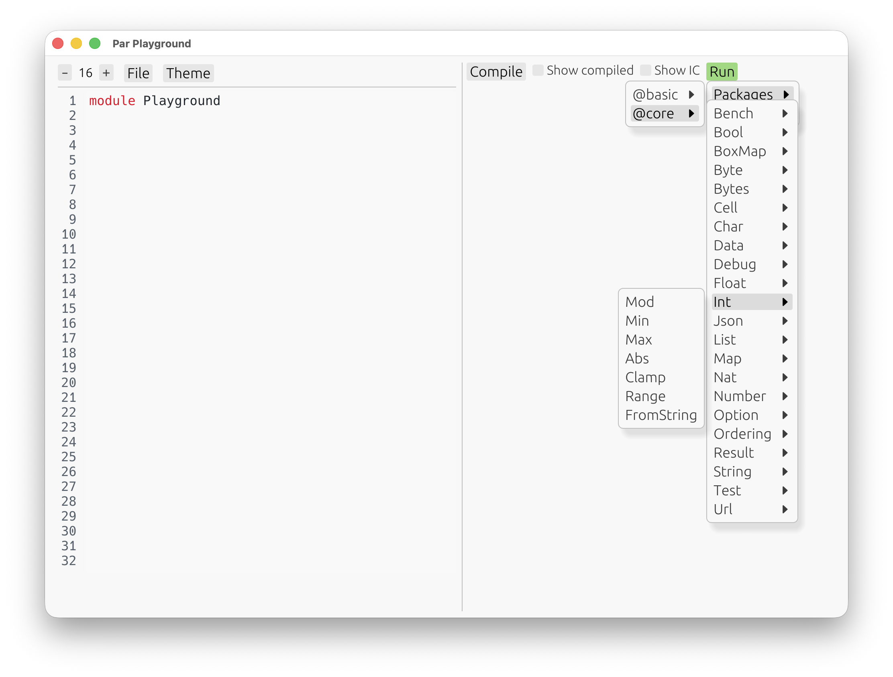
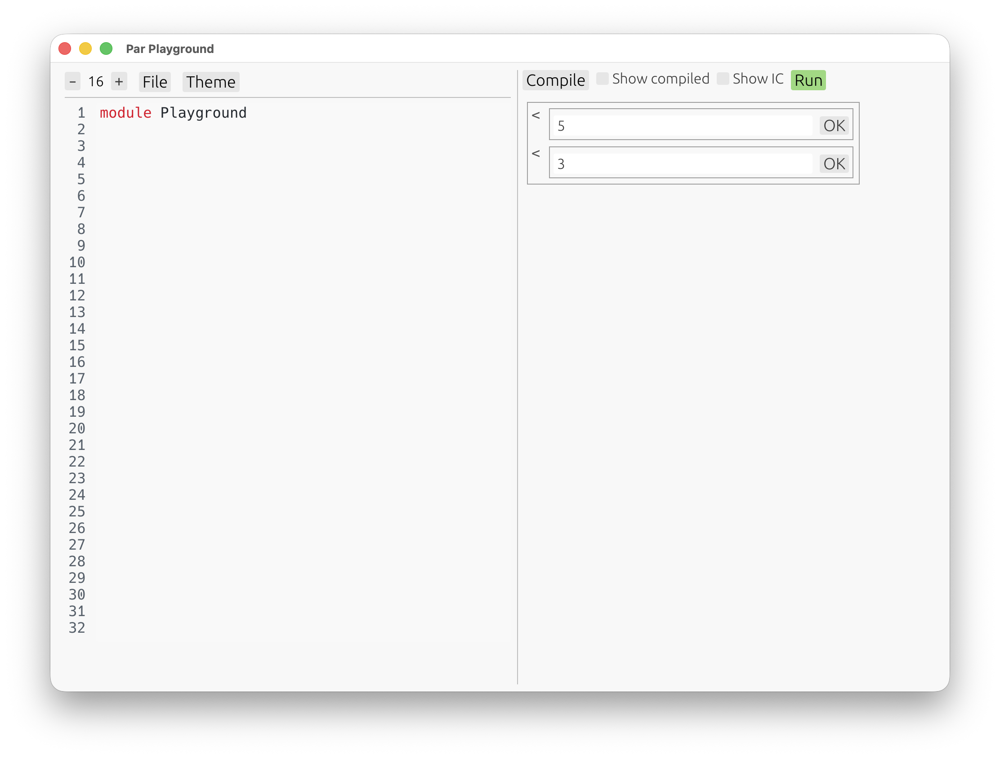
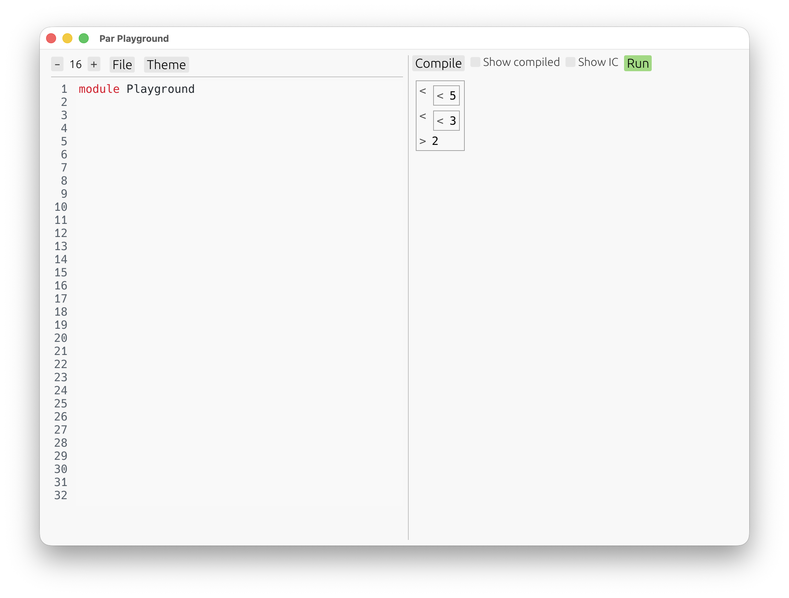

Basic Program Structure
Before we start writing our own package, it’s helpful to see Par in action in the playground.
Let’s open it:
$ par playground
Press Compile, then open the Run menu and pick a built-in definition from core.

As a first example, choose one of the built-in numeric helpers from the core package. Int.Mod
computes the non-negative remainder of an integer modulo a natural number:

An automatic UI shows up, telling us to input the arguments expected by the selected definition. After confirming them, we get a result:

This automatic UI is a feature of the playground, not of the Par language itself. Nobody made a
specific interface for Int.Mod. Instead, the playground looked at its type — here, a function from
two numbers to a number result — and generated a small interface for interacting with it.
That makes the playground a nice way to explore built-in definitions, and later your own definitions too.
On the next page, we’ll create a fresh package and look at what actually lives inside a Par module.